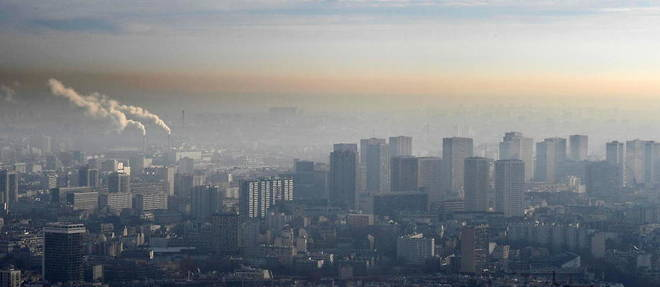
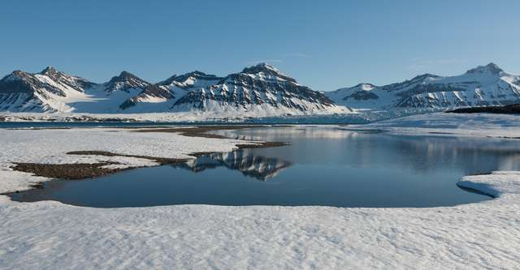
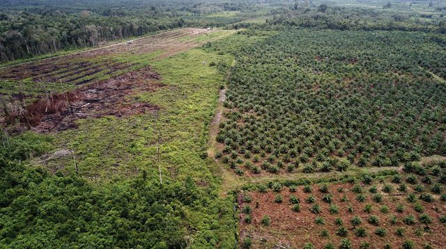

Qui sommes nous ?
Annie, Marc et Lola, trois amis. Nous nous sentons responsables de notre planète, la Terre, et nous voulons faire quelque chose pour elle. Nous voulons pouvoir dire à nos enfants que nous avons fait tout ce que nous pouvions.
"Pour moi, tout a commencé à la lecture d'un article de Science et Vie, qui parlait des conséquences du réchauffement climatique, et de notre futur. Je me suis dit que je ne pouvais pas rester inactive."
- Annie
Des chiffres
1
million d'espèces animales et végétales sont menacées d'extinction.
2040
C'est l'année où il faudra s'attendre à des vagues de chaleur dépassant
3 semaines, mais aussi à des pluies inondations plus fréquentes et extrêmes.
Notre mission
"Notre mission est de montrer à tous que chacun peut faire quelque chose. Nous avons élaboré un plan d'action individuel de 7 choses que chacun peut faire pour notre planète."
- Marc
Pour aller plus loin

Pollution de l'air : plus de 300 000 décès en 2019
Les décès liés aux particules fines dans l’UE ont toutefois reculé de 10 %, notamment grâce à des conditions météorologiques favorables.

Le Groenland fond tellement vite que cela accroît les risques d’inondation dans le monde
La fonte de la calotte du Groenland a commencé en 1990. Elle s'accélère depuis 2000. Et des chercheurs confirment aujourd'hui l'ampleur du phénomène grâce à des mesures satellites.

En Indonésie, la déforestation provoque des chaleurs mortelles
Selon une étude, la déforestation dans une province indonésienne a provoqué un réchauffement de près de 1°C en 16 ans, provoquant une hausse de la mortalité de 8%.
Alors, prêts à changer le cours de l'histoire ?